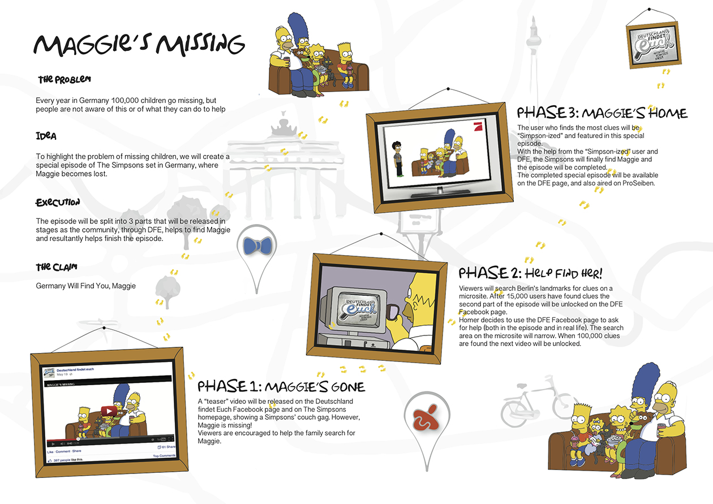

Deutschland Findet Euch is an online platform, in Germany, to help people find lost children.
The platform needs the most likes possible so that messages can spread all around the country.
So how about we increase exposure about DFE using the world's most beloved family? The Simpsons.
We created a digital campaign with a special episode and event to raise awareness for DFE and try and get more people involved.
CW: Javed Jasani
AD: Mayan Sabry
Tutors: Nicholas Schmidt-Fitzner & Jan-Hendrik Scholz, Senior Creatives Art & Copy, thjnk
